dma_bus_firewall — FIREWALL_TOP — PASS

Mở VCD bằng GTKWave để xem toàn bộ tín hiệu và khoảng thời gian.
Lần chạy: 2026-09-18T17:20:00.710366+00:00 · EVIDENCE_COMPLETE_REVIEW_REQUIRED
PASS chỉ áp dụng cho testcase và phạm vi được ghi. MOCK_INTEGRATION dùng mock; CPU_SMOKE chỉ là smoke test. Ảnh dạng sóng giúp đọc VCD, không thay thế checker/coverage. Kết quả vật lý nhập vào mang nhãn REPORTED_PASS, chưa phải signoff độc lập.
CSV mô phỏng · CSV vật lý · JSON đầy đủ · Danh mục SHA-256
| Test | Phạm vi | Kết quả | Ghi chú / bằng chứng |
|---|---|---|---|
| dma_fifo | DMA_UNIT | PASS | compile.log · simulation.log · VCD |
| dma_apb | DMA_UNIT | PASS | compile.log · simulation.log · VCD |
| dma_axi | DMA_UNIT | PASS | compile.log · simulation.log · VCD |
| dma_controller | DMA_UNIT | PASS | compile.log · simulation.log · VCD |
| picorv32_smoke | CPU_SMOKE | PASS | Upstream increment-loop smoke: observes write of 5 to 0x3fc. Not ISA compliance or CPU-SoC integration verification. compile.log · simulation.log · VCD |
| drain_wrapper_mock | MOCK_INTEGRATION | PASS | compile.log · simulation.log · VCD |
| dma_firewall_boundary_mock | MOCK_INTEGRATION | PASS | compile.log · simulation.log · VCD |
| address_slice_observation | FIREWALL_UNIT | PASS | Self-checking assertions for Stage 1 AW/AR latching, 4KB boundary, overflow, profile error and stall stability. compile.log · simulation.log · VCD |
| fw_apb_regs | STUDENT_UNIT | PASS | compile.log · simulation.log · VCD |
| fw_acl_matcher | STUDENT_UNIT | PASS | compile.log · simulation.log · VCD |
| fw_write_drain | STUDENT_UNIT | PASS | compile.log · simulation.log · VCD |
| fw_read_drain | STUDENT_UNIT | PASS | compile.log · simulation.log · VCD |
| fw_context_tracker | FIREWALL_UNIT | PASS | compile.log · simulation.log · VCD |
| fw_data_path_mux | FIREWALL_UNIT | PASS | compile.log · simulation.log · VCD |
| fw_drain_fsm | FIREWALL_UNIT | PASS | compile.log · simulation.log · VCD |
| dma_bus_firewall | FIREWALL_TOP | PASS | compile.log · simulation.log · VCD |
| soc_real_integration | SOC_REAL | PASS | Real PicoRV32 CPU + APB bridge + DMA controller + real firewall + AXI memory model. CPU firmware configures both APB targets, starts DMA, and raises a real trap for the AEGIS NMI path. compile.log · simulation.log · VCD |
| soc_reset_contract | SOC_REAL | PASS | Production AEGIS SoC top reset contract: asynchronous assertion, two-edge functional deassertion and explicit test_mode bypass alignment. compile.log · simulation.log · VCD |
| aegis_rowhammer_5000 | AEGIS_E2E | PASS | AEGIS end-to-end directed test with 5,000 alternating Rowhammer bursts, timing probe, normal DMA and CPU NMI scenarios. compile.log · simulation.log · VCD |
| fw_hdc_sense | AEGIS_HDC | PASS | AEGIS HDC 1024-bit hyperdimensional computing sensing engine: single-cycle classifier, telemetry tap, distance comparison, and fingerprinting. compile.log · simulation.log · VCD |
| fw_closed_loop_ctrl | AEGIS_REFLEX | PASS | AEGIS closed-loop reflex controller: 1-cycle NMI irq[3] dispatch, per-MID score tracker, decay epoch, forensic FIFO, and status registers. compile.log · simulation.log · VCD |
| fw_honeypot_sink | AEGIS_MTD | PASS | AEGIS MTD Honey-Pot sink: absorbs malicious Rowhammer write bursts and returns dummy read data transparently with AXI OKAY. compile.log · simulation.log · VCD |
| fw_hdc_sense_challenger2 | AEGIS_CHALLENGER | PASS | Challenger 2 empirical verification: latency invariants, 0-cycle trap preemption, single-cycle evaluation, and avalanche distribution. compile.log · simulation.log · VCD |
| adversarial_m1 | AEGIS_STRESS | PASS | Adversarial stress suite: 5,000 random benign DMA bursts (0% FP), 4KB row boundary traversal, and evasion probe checks. compile.log · simulation.log · VCD |
| soc_dma_firewall_contract | SOC_CONTRACT | PASS | Full DMA Controller + Production DMA Bus Firewall end-to-end contract testbench. compile.log · simulation.log · VCD |
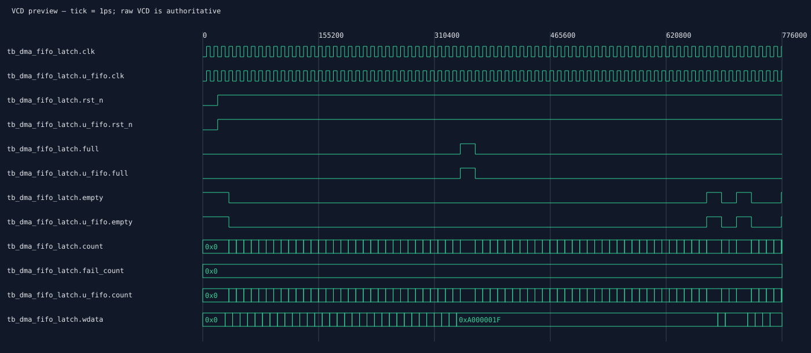
Mở VCD bằng GTKWave để xem toàn bộ tín hiệu và khoảng thời gian.
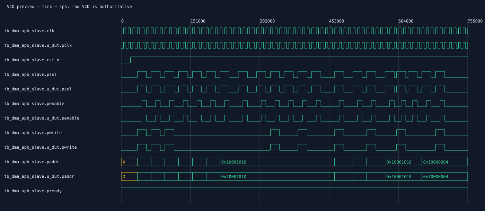
Mở VCD bằng GTKWave để xem toàn bộ tín hiệu và khoảng thời gian.
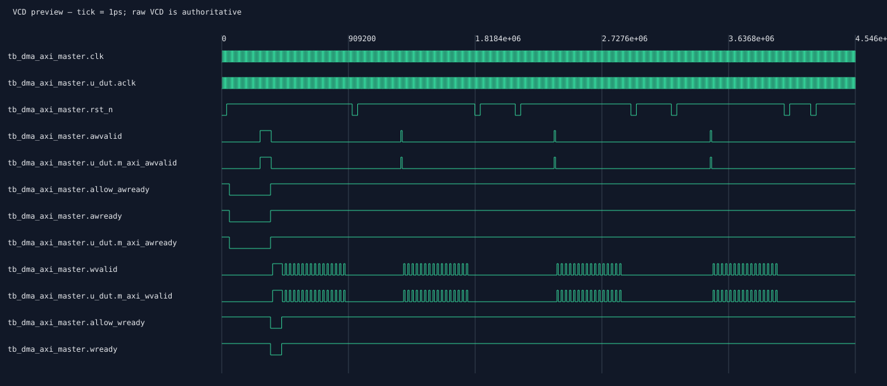
Mở VCD bằng GTKWave để xem toàn bộ tín hiệu và khoảng thời gian.
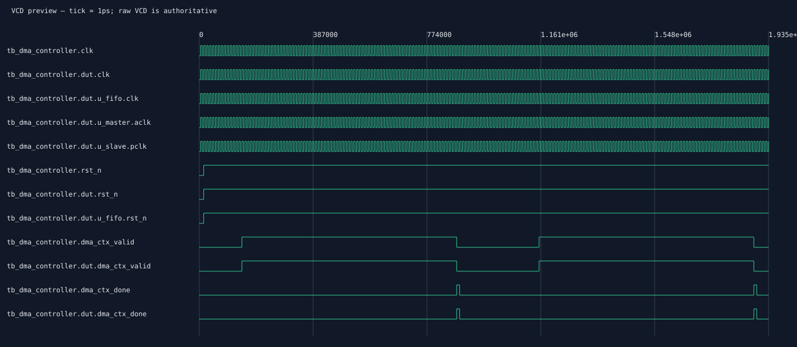
Mở VCD bằng GTKWave để xem toàn bộ tín hiệu và khoảng thời gian.
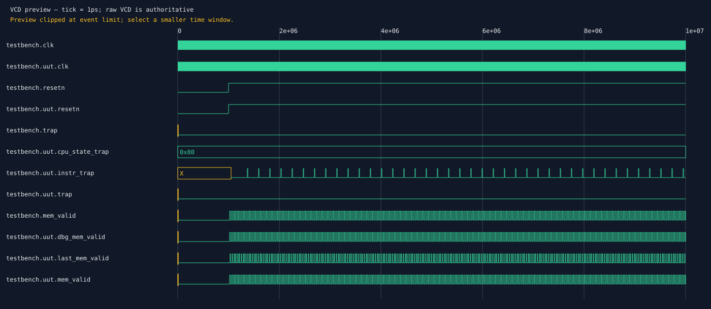
Mở VCD bằng GTKWave để xem toàn bộ tín hiệu và khoảng thời gian.
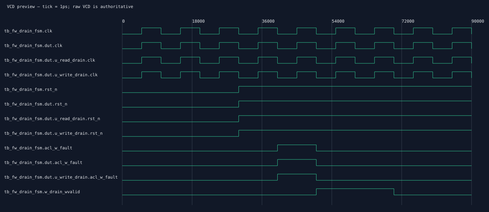
Mở VCD bằng GTKWave để xem toàn bộ tín hiệu và khoảng thời gian.
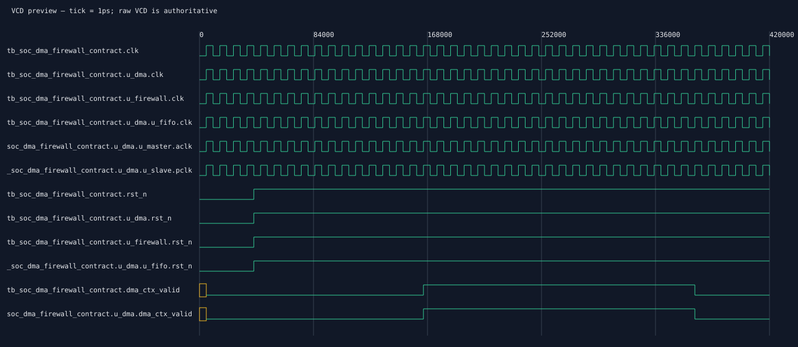
Mở VCD bằng GTKWave để xem toàn bộ tín hiệu và khoảng thời gian.
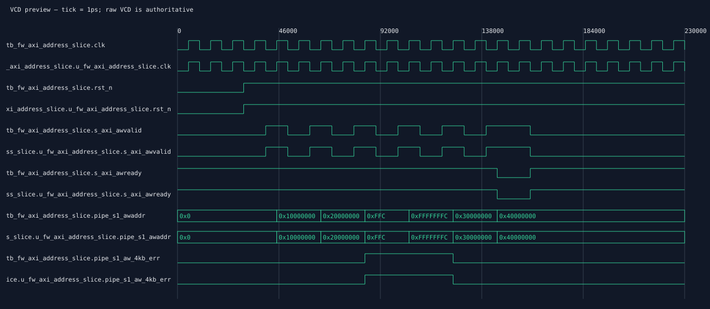
Mở VCD bằng GTKWave để xem toàn bộ tín hiệu và khoảng thời gian.
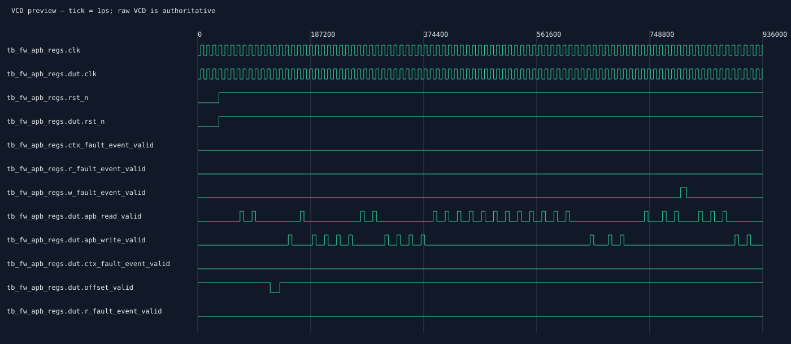
Mở VCD bằng GTKWave để xem toàn bộ tín hiệu và khoảng thời gian.
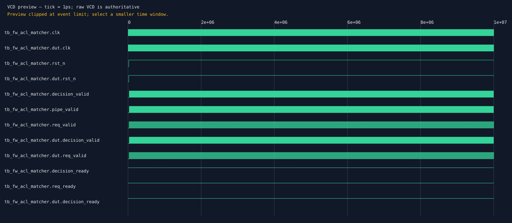
Mở VCD bằng GTKWave để xem toàn bộ tín hiệu và khoảng thời gian.
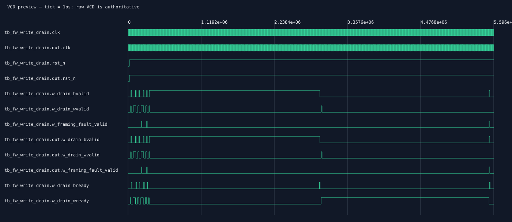
Mở VCD bằng GTKWave để xem toàn bộ tín hiệu và khoảng thời gian.
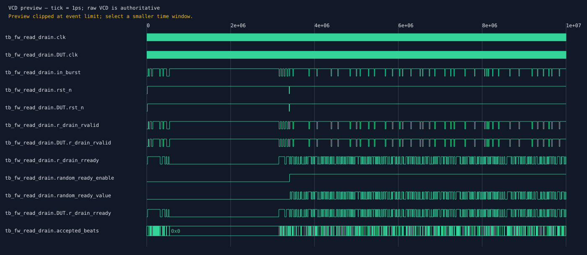
Mở VCD bằng GTKWave để xem toàn bộ tín hiệu và khoảng thời gian.
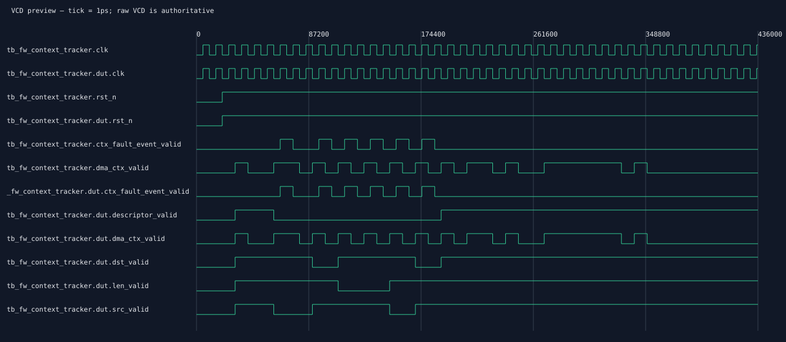
Mở VCD bằng GTKWave để xem toàn bộ tín hiệu và khoảng thời gian.
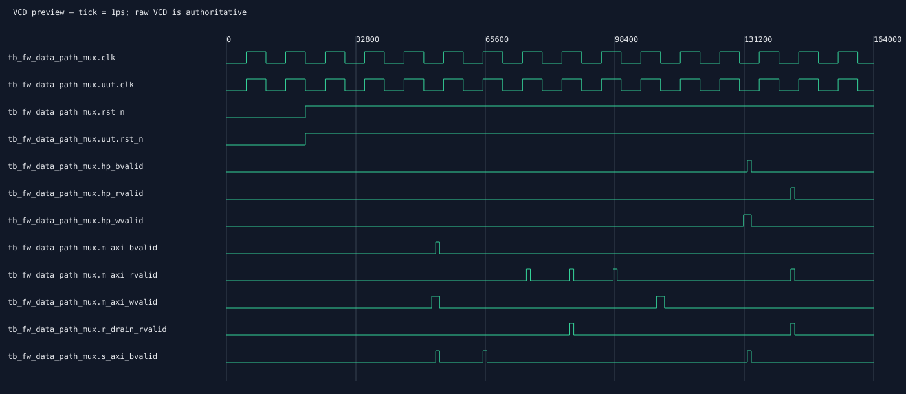
Mở VCD bằng GTKWave để xem toàn bộ tín hiệu và khoảng thời gian.
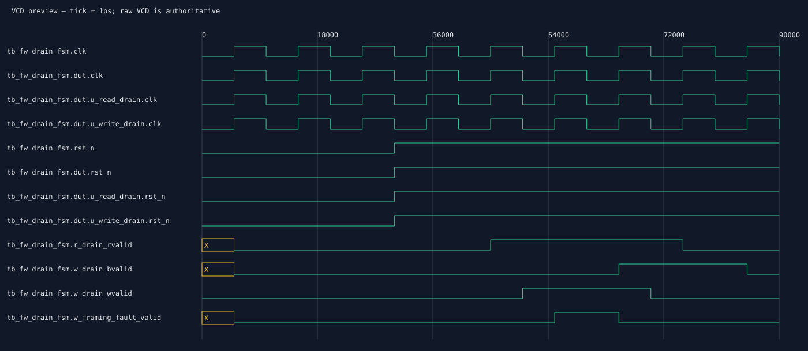
Mở VCD bằng GTKWave để xem toàn bộ tín hiệu và khoảng thời gian.
Mở VCD bằng GTKWave để xem toàn bộ tín hiệu và khoảng thời gian.

Mở VCD bằng GTKWave để xem toàn bộ tín hiệu và khoảng thời gian.
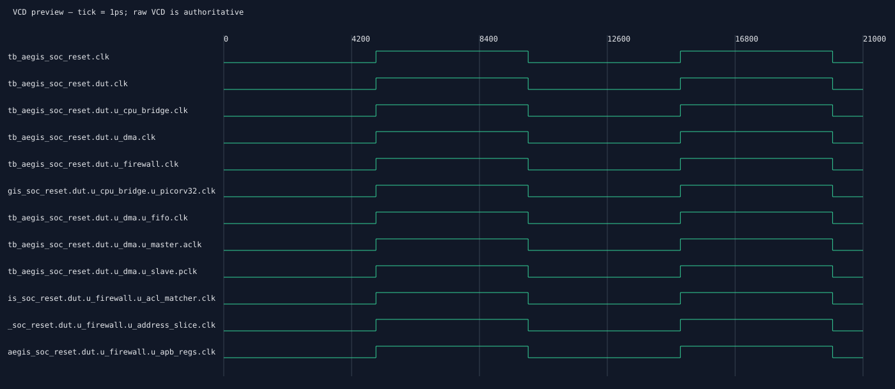
Mở VCD bằng GTKWave để xem toàn bộ tín hiệu và khoảng thời gian.

Mở VCD bằng GTKWave để xem toàn bộ tín hiệu và khoảng thời gian.
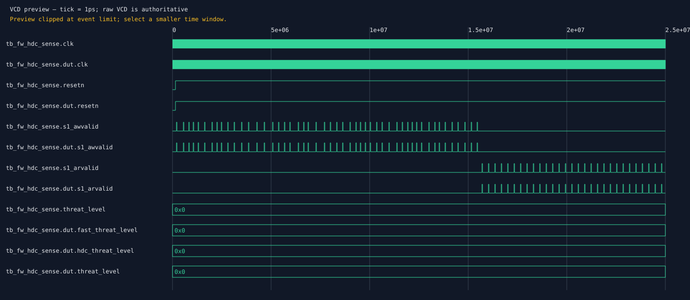
Mở VCD bằng GTKWave để xem toàn bộ tín hiệu và khoảng thời gian.
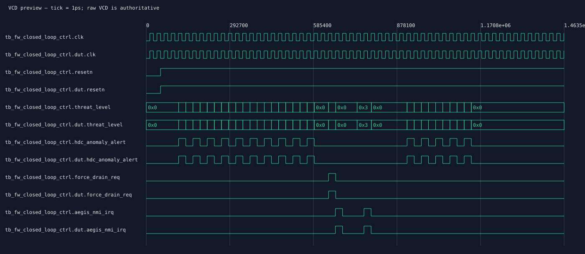
Mở VCD bằng GTKWave để xem toàn bộ tín hiệu và khoảng thời gian.
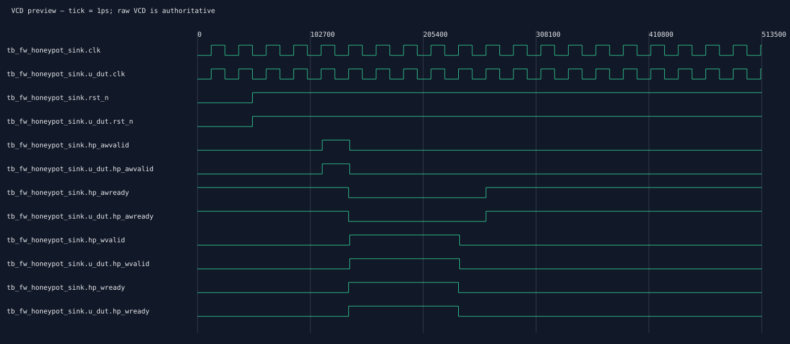
Mở VCD bằng GTKWave để xem toàn bộ tín hiệu và khoảng thời gian.
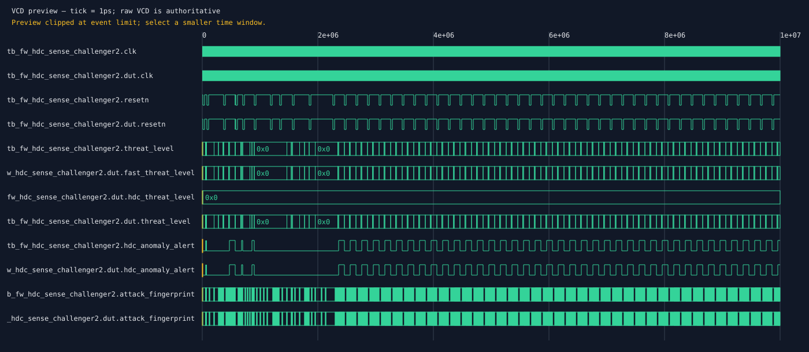
Mở VCD bằng GTKWave để xem toàn bộ tín hiệu và khoảng thời gian.
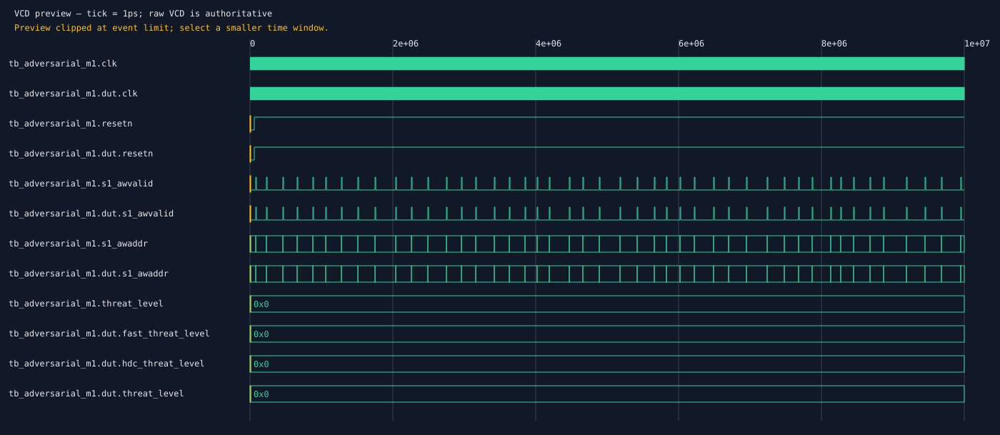
Mở VCD bằng GTKWave để xem toàn bộ tín hiệu và khoảng thời gian.
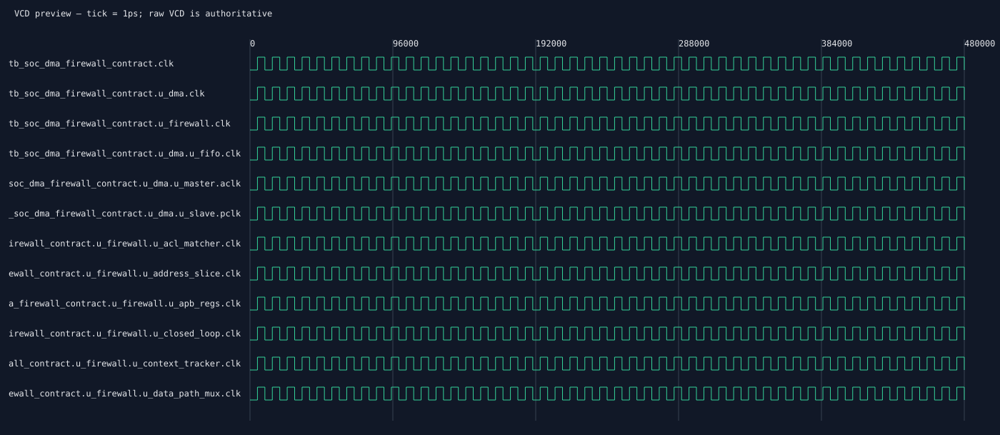
Mở VCD bằng GTKWave để xem toàn bộ tín hiệu và khoảng thời gian.
Trạng thái: FAIL
{
"top": "dma_bus_firewall",
"source_revision": "36c4281bb87e67ee18d2462c784bc5d4a3e63a98",
"pdk": "sky130A",
"pdk_version": "0fe599b2afb6708d281543108caf8310912f54af",
"gds_sha256": "facdb11b6fee27656534ba7acb4caf33a0e4642e700b61aac87e2e9228754f94"
}
| Kiểm tra | Kết quả | Số liệu |
|---|---|---|
| drc | REPORTED_PASS | {"id": "drc", "status": "REPORTED_PASS", "value": 0, "tool": "KLayout v0.28.16 (Independent Golden Foundry Deck)", "version": "sky130A_mr.drc 2024.2.11_01.09", "command": "klayout -b -rd input=dma_bus_firewall.gds -rd top_cell=dma_bus_firewall -rd report=klayout_drc.rpt -rd beol=true -r sky130A_mr.drc", "exit_code": 0} |
| lvs | REPORTED_PASS | {"id": "lvs", "status": "REPORTED_PASS", "value": true, "tool": "Netgen 1.5.255 & Magic 8.3 VLSI (Independent Golden LVS)", "version": "Netgen 1.5.255 / Magic 8.3.416", "command": "netgen -batch lvs dma_bus_firewall_layout.spice dma_bus_firewall.pnl.v netgen_setup_robust.tcl netgen_lvs.log -json", "exit_code": 0} |
| typical/functional/setup | REPORTED_PASS | {"corner": "typical", "mode": "functional", "stage": "post_route", "check": "setup", "unit": "ns", "tool": "OpenSTA", "version": "2.6.0", "command": "report_checks -path_delay max", "exit_code": 0, "report": "sta_tt_025C_1v80_38mhz.rpt", "wns": 0.81, "tns": 0.0, "unconstrained_endpoints": 0, "id": "typical/functional/setup", "status": "REPORTED_PASS"} |
| typical/functional/hold | FAIL | {"corner": "typical", "mode": "functional", "stage": "post_route", "check": "hold", "unit": "ns", "tool": "OpenSTA", "version": "2.6.0", "command": "report_checks -path_delay min", "exit_code": 0, "report": "sta_tt_025C_1v80_38mhz.rpt", "wns": -0.02, "tns": -0.07, "unconstrained_endpoints": 0, "id": "typical/functional/hold", "status": "FAIL"} |
gds · SHA256 facdb11b6fee27656534ba7acb4caf33a0e4642e700b61aac87e2e9228754f94
layout_image · SHA256 b6897aa7e28505e3567c48bd6509ff68dd2bff634b1945f31dc62243acbeeb70
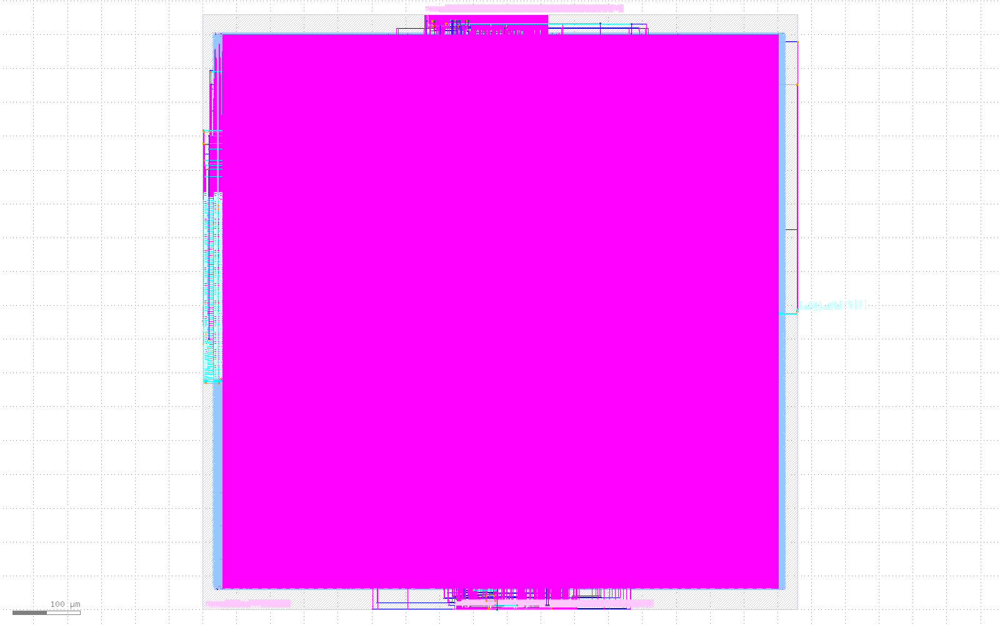
netlist · SHA256 05b3217891b1eb435d660723dcd83b96a9f58dc3d629a329b9fc4f3627c739c1
sdc · SHA256 b6c9cc9d68ae8712d3698c4ec16b2a3ceeb0e15d6335ccd1a6881e2e63eb4848
spef · SHA256 e167ebcda144619372b5f36a3b34c8d2c9d44c51476c28f5977f1ce667ec6b6f
sdf · SHA256 840617b88677b819d6778563929f18877cb0fafed8f7f5a4c6bbd968b440059d
liberty · SHA256 8e78e14442062dba34d414fca6490b2f6b96038d4510d1438ca44fee31487135
drc_deck · SHA256 6cbb73fc445eae75e7827a7eaa94d79dd107205dbef28b01c9a15685746919e2
lvs_deck · SHA256 447865a68283a0b21ed3ed48162a273f60703bb11851cc9f59e393bf0120bfa2
drc_report · SHA256 bc6de976aa5385fb4e37ef833dbaf173ed8030f08ab5acead65f4e807c70b996
lvs_report · SHA256 af27cb8a8531b9486f3c3b6fd49f1850e0cd26c6ed44a902e30835b414ffbcb3
timing_0_report · SHA256 3c45c921fb1f48b89d4d24db6576965b60bc2740e124da0fe4658a106af8d3a4
timing_1_report · SHA256 3c45c921fb1f48b89d4d24db6576965b60bc2740e124da0fe4658a106af8d3a4